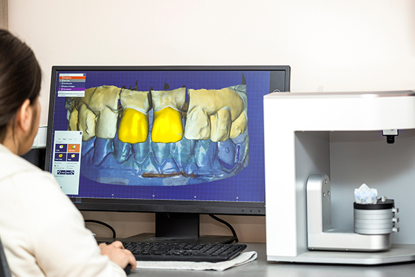

Digital Wax Ups
The art of waxing up teeth is a skill that great technicians have mastered over many years. While there is still the occasional need to pull out the tools and wax up a crown by hand, the introduction of digital design technology has allowed us to become more efficient and predictable with these types of products.
Whether through a digital intraoral scan or an impression that has been scanned, a 3D model of the patient’s teeth are generated in our software. This Digital model can then be manipulated in a number of ways. Existing teeth can be reduced or extracted completely, to mock-up an extraction or a crown preparation, and then proposed teeth can be overlayed. These teeth can be built up based on a number of factors, including specific measurements where desired, and can even be overlayed with a patient photo to get a basic view of how the smile may look.
In most instances, a digital wax up, with a printed model and putty key is a great way for dentists to provide the patient with a sample of what the proposed work will look like, and can be a powerful tool to help get the patient over the line.
Our price for digital wax-ups includes a 3D printed model and a putty key, and out technicians are more than happy to work with you to get the design you’re after!
Please see our Digital Design Protocols here, for details on what to send to us, and the best ways to send it.
